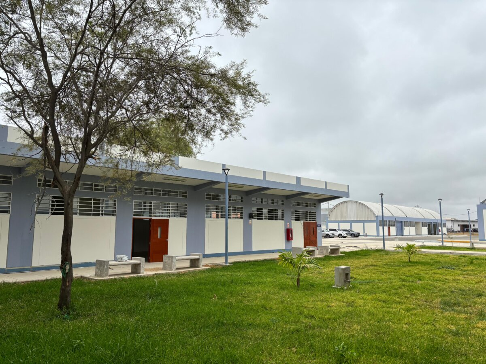
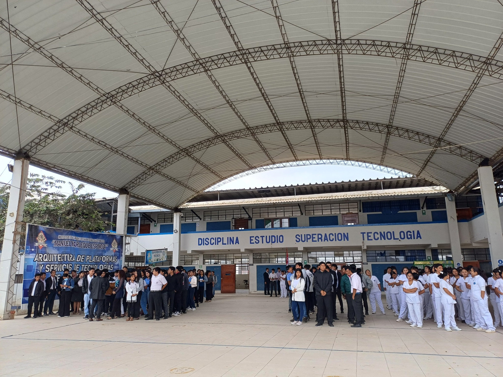
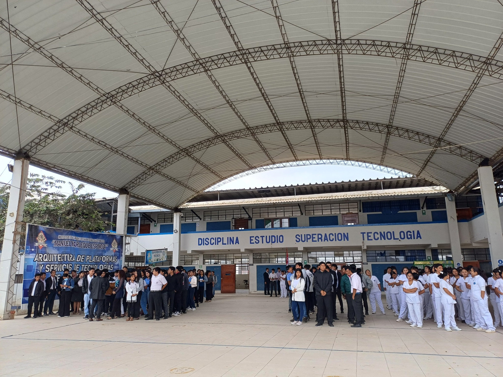
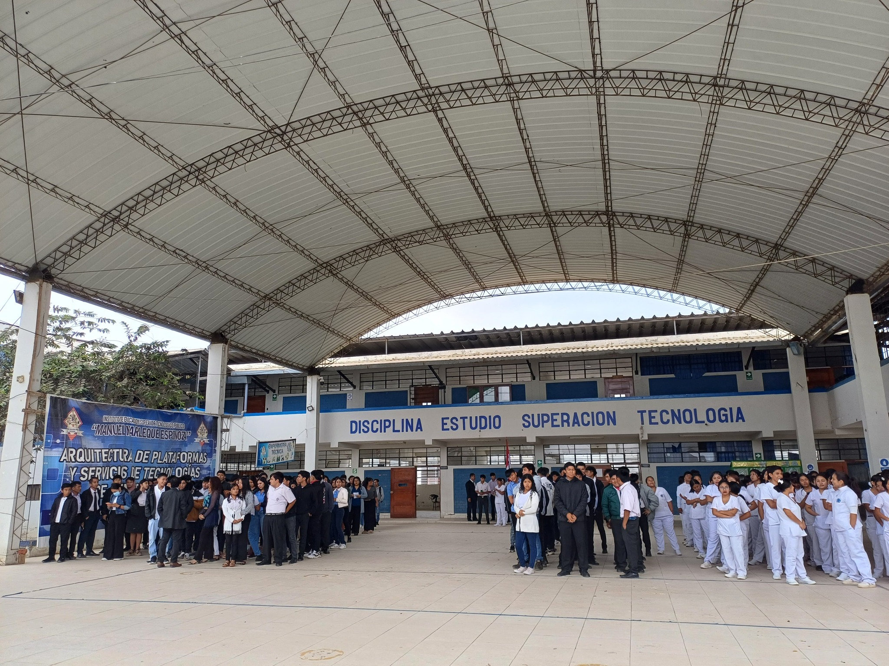

Sobre Nuestra Institución
Somos una comunidad educativa dedicada a formar líderes con visión de futuro, ética profesional y un fuerte compromiso con el desarrollo sostenible de nuestra región.
Misión
Formar profesionales técnicos competentes y emprendedores, a través de una educación tecnológica de calidad, que contribuya al desarrollo socioeconómico y cultural de la región Piura. Fomentamos la investigación, la innovación y la responsabilidad social.
Visión
Ser una institución de educación superior tecnológica líder en la región norte, reconocida por su excelencia académica, su compromiso con la innovación y su capacidad para formar profesionales que respondan con éxito a las exigencias de un mundo globalizado.
Nuestros Valores
Excelencia
Integridad
Innovación
Compromiso
Responsabilidad
Nuestras Instalaciones y Estudiantes

 

